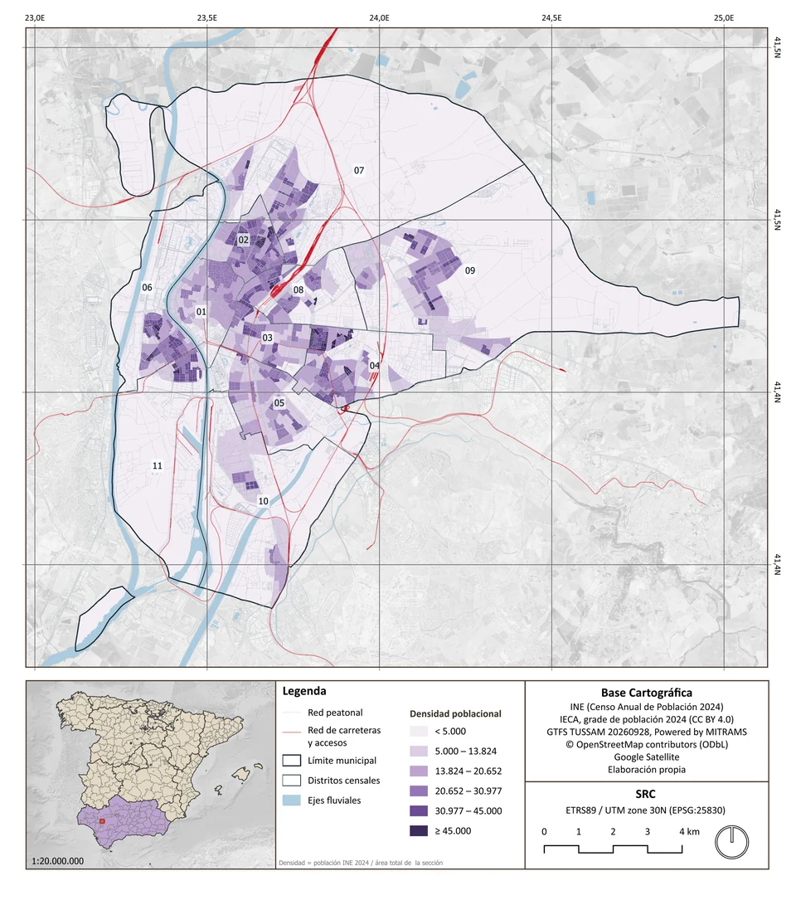
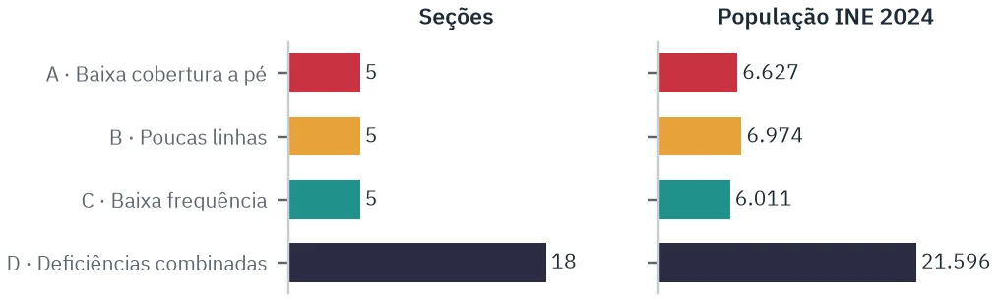

04 Projeto · Sevilha, Espanha
Desigualdade territorial na oferta de ônibus urbanos em Sevilha (ES)
Densidade populacional, acessibilidade e frequência programada do serviço TUSSAM
Sevilha, Andaluzia, Espanha
Visão geral
O estudo separa três perguntas que costumam ser misturadas: existe parada perto? quantas linhas passam ali? com que frequência? A cobertura física é alta, mas a oferta acessível varia muito: bairros como Nervión superam cinco linhas, enquanto muitos dependem de uma ou duas. As 33 seções prioritárias são peças pequenas dentro de bairros densos, não grandes vazios de serviço. Em Triana e Los Remedios o problema é a falta de parada para parte dos moradores; em Cerro-Amate, quase todos têm parada, mas com poucas linhas e partidas espaçadas.
Problema
Sevilha tem uma rede de ônibus densa, mas a oferta não se distribui igualmente. Uma seção pode ter paradas próximas e, ainda assim, poucas linhas ou partidas muito espaçadas: a falta de parada e a baixa intensidade do serviço são problemas diferentes.
Objetivo
Identificar as seções censitárias de Sevilha que combinam elevada densidade populacional com oferta relativamente insuficiente de ônibus urbanos e explicar em que consiste essa insuficiência em cada caso.
Métodos e tecnologias
- Três dimensões medidas separadamente: proximidade (parada com serviço a até 400 m pela rede de pedestres), diversidade de linhas e partidas por hora sem dupla contagem da mesma viagem.
- População oficial do INE por seção (01/01/2024) e localização aproximada dos moradores pela grade de 250 m do IECA (887 células).
- Horários do GTFS TUSSAM para dia útil, em três faixas (07–09, 12–14, 17–19); 230.199 passagens repetidas eliminadas.
- Rede de pedestres do OpenStreetMap respeitando rios, ferrovias e autovias.
- Limiares internos à cidade (quartis) e tipologia A–D: baixa cobertura, poucas linhas, baixa frequência, deficiências combinadas.
Fontes de dados
- INE — Censo Anual de Población 2024 e seccionado censal 2024
- IECA (Junta de Andalucía) — Distribución espacial de la población, malla 250 m, 2024 (CC BY 4.0)
- TUSSAM — GTFS publicado no Punto de Acceso Nacional (Powered by MITRAMS), versão 20260928
- OpenStreetMap — rede de pedestres e barreiras (ODbL 1.0)
- IDE Sevilla — camadas TUSSAM usadas apenas para controle de qualidade (não redistribuíveis)
Os dados pertencem às respectivas fontes, com condições próprias de uso.
Resultados
94,36%
da população tem parada com serviço a até 400 m de percurso a pé (percurso médio de 209 m): a desigualdade está mais na intensidade do serviço do que na existência de parada.
3,55
linhas distintas ao alcance do morador médio no pico da manhã; bairros como Nervión superam cinco, enquanto muitos dependem de uma ou duas.
−15,5%
de partidas programadas acessíveis à tarde em relação à manhã (29,8 → 25,2 por hora para o morador médio): a tarde não perde linhas, perde frequência.
33
seções prioritárias (41.208 moradores, 6,0% da população) combinam alta densidade com ao menos uma deficiência; 22 das 23 com baixa frequência pela manhã a mantêm nas três faixas do dia.
Mapas e gráficos
Clique na imagem para aproximar; arraste ou role para navegar.


Ampliar imagem

Ampliar imagemConsulte os demais mapas, gráficos e resultados no relatório completo disponível ao final desta página.
Limitações
- Mede a oferta programada no GTFS, não a pontualidade real nem a demanda; 77% dos horários por parada são interpolados (sensibilidade de ±2 min altera a frequência média em menos de 0,5%).
- Apenas ônibus urbano TUSSAM: metrô, bonde, cercanías e ônibus metropolitanos não foram considerados.
- Limiares relativos e internos a Sevilha, não padrões técnicos ou legais; há seções com deficiências graves e densidade intermediária fora das 33.
Materiais completos
Código no GitHub
gabrielloubarboza/Desigualdade_territorial_no_transporte_publico_em_Sevilha_Espanha
Dados (GeoPackage)
- sevilla_oferta_bus_resultados.gpkg521 seções com indicadores, 33 prioritárias, paradas e células IECA
- sevilla_oferta_bus_contexto_osm.gpkgRede de pedestres e barreiras (OpenStreetMap)
Licença: Resultados: INE (citação), IECA CC BY 4.0, “Powered by MITRAMS”; contexto: ODbL 1.0
Não distribuído: Camadas TUSSAM da IDE Sevilla (redistribuição proibida pelos termos) e bases CNIG/IGN e da Junta de Andalucía.